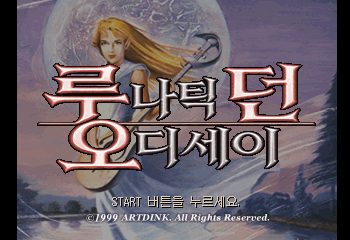

루나틱 던 오디세이
Lunatic Dawn - Odyssey
게임 소개
동료들과 함께 여러 마을을 여행하는 아트딩크의 롤플레잉 게임입니다. 1인칭 시점으로 세상을 둘러보며 주민들과 이야기를 나누고, 상점에서 장비를 갖춰 다음 모험을 준비합니다. 적을 만나면 시점이 바뀌어 일행의 모습을 보며 턴제로 싸웁니다.
모험가로 살아가다 결혼해 아이를 낳을 수도 있습니다. 새로 시작할 때마다 마주치는 상황이 달라지고, 모험은 여러 결말로 이어집니다.
한글패치 v0.7
타이틀 로고와 대사, 의뢰, 메뉴, 노래 가사, 아이템·몬스터 도감, 게임 오버와 엔딩 자막을 한글화했습니다. 기본 이름은 베리오스이며, 한글 자모를 조합해 새 이름을 지을 수 있습니다.
일본판 원본 Track 1에 패치를 적용하세요. 준비할 파일과 SHA-256 해시, 설치 방법은 ZIP의 readme.txt에 있습니다.
